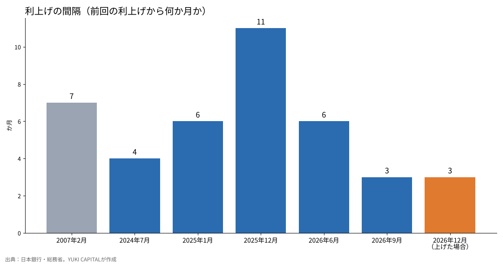
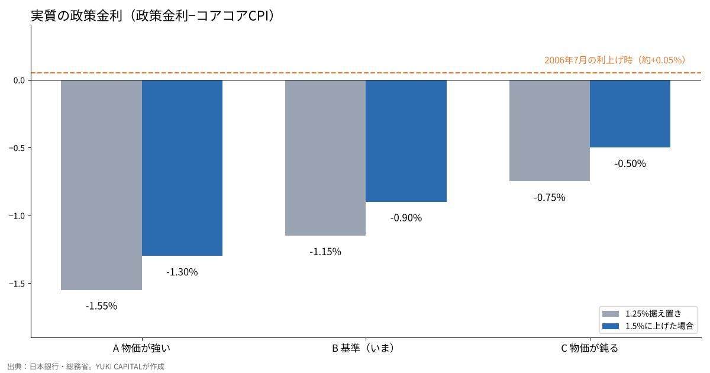

日銀・高田委員の「機動的な利上げ」は12月に来るのか――2006年と2024〜2026年の利上げの間隔・物価・ドル円で検証
11月16日、日本銀行の高田創審議委員は徳島市の講演で、決まった間隔や幅にとらわれず、機動的に利上げを進めるべきだと述べた。
高田委員は10月30日の決定会合で、政策金利を1.25%から1.5%へ上げる議案を出し、8対1で否決されている。
本稿の問いは、日銀は12月の決定会合で1.5%へ上げるのか、それとも据え置くのか、である。
- 物価を差し引いた実質の政策金利は、2006年7月の利上げ時の約0%に対し、いまは約−1.2%で、上げる余地は2006年より大きい。
- 2024年3月以降の利上げの間隔は11か月→3か月へ縮んでおり、9月から3か月後の12月は、この流れの延長に入る。
- 据え置きの理由になりうるのは、年率−0.1%の7〜9月期のGDPと消費の弱さで、12月の判断はこの2つと円安の綱引きになる。
問いと背景
政策金利とは、日銀が誘導する短期の金利（無担保コールレート翌日物）を指す。実質の政策金利とは、政策金利から物価上昇率を引いたもので、本稿では生鮮食品とエネルギーを除いた消費者物価（コアコアCPI）を使う。
中立金利とは、景気を温めも冷やしもしない金利の水準である。日銀のスタッフの推計では、物価を除いた実質の中立金利（自然利子率）はおよそ−1.0%〜+0.5%と幅が広い[8]。物価が2%で安定すると置けば、名目では1.0%〜2.5%になる。
日銀は2024年3月にマイナス金利を解除し、2024年7月に0.25%、2025年1月に0.5%、2025年12月に0.75%、2026年6月に1.0%、2026年9月に1.25%へ上げてきた[1]。10月30日は1.25%で据え置き、反対したのは高田委員の1人だけだった[1]。
比べる相手は2006年である。日銀は2006年3月に量的緩和を解除し、7月14日にゼロ金利を解除して0.25%へ、2007年2月に0.5%へ上げた[6]。日本がデフレの後に初めて利上げを重ねた局面で、今回と出発点が近い。
データと方法
使う数字は4種類である。政策金利の変更日と幅は日銀の公表文[1][6]、物価は総務省の消費者物価指数[3][7]、景気は内閣府のGDP速報[4]、為替は財務省の介入実績[5]と市場の終値を使う。
方法は2つ。1つ目は、利上げの間隔（前回の利上げから何か月か）を並べ、今回の局面がどの速さで進んでいるかを見る。2つ目は、利上げを決めた月の実質の政策金利を比べ、上げる余地がどれだけ残っているかを見る。
市場の金利から計算する利上げの確率（翌日物金利スワップの織り込み）は、日によって大きく動き、取得元でも数字が違う。本稿は確率を答えの根拠にせず、公表された物価・景気・為替の数字だけで判断の向きを置く。
2006年の物価は、2006年8月の基準改定で下方修正された後の数字を使う。改定後、7月の生鮮食品を除く消費者物価の上昇率は0.2%だった[7]。今回の物価は、2026年9月の生鮮食品及びエネルギーを除く総合の2.4%を使う[3]。
市場の見方も確かめた。大和総研は、日銀が12月の会合で1.5%へ、2027年3月の会合で1.75%へ上げ、いったん止めると見ている[9]。物価が上振れれば、2027年6月に2.0%もありうるとする[9]。本稿はこの見通しを答えとせず、数字で同じ結論に届くかを確かめる。
結果
利上げの間隔は、2006〜2007年が7か月だった。2024年3月以降は4か月、6か月、11か月、6か月、3か月と動き、直近は最も短い。12月に上げれば、間隔は3か月で並ぶ。

12月という月にも前例がある。日銀は2025年12月の会合で0.5%から0.75%へ上げており[1]、展望レポートを出さない会合でも利上げを決めてきた。1年前と同じ月に、同じ0.25%を重ねる形になる。
実質の政策金利は、2006年7月の利上げ時が0.25%−0.2%で約+0.05%、2007年2月はほぼ0%だった。今回は1.25%−2.4%で約−1.15%である。12月に1.5%へ上げても約−0.9%で、まだマイナスにとどまる。
| 2006年7月 | 2007年2月 | 2026年9月 | 2026年12月（上げた場合） | |
|---|---|---|---|---|
| 政策金利 | 0.25% | 0.5% | 1.25% | 1.5% |
| 物価（前年比） | 0.2%（コア） | 0.0%前後（コア） | 2.4%（コアコア） | 2.4%と置く |
| 実質の政策金利 | 約+0.05% | 約0% | 約−1.15% | 約−0.9% |
| 前回からの間隔 | —（初回） | 7か月 | 3か月 | 3か月 |
| ドル円（目安） | 116円前後 | 120円前後 | 157〜158円台 | 159円台（11/16） |
景気の側は弱い。11月16日の1次速報で、7〜9月期の実質GDPは年率−0.1%と4四半期ぶりのマイナスで、個人消費は前期比−0.3%と2四半期続けて減った[4]。一方で設備投資は+1.6%で、内需全体はプラスだった[4]。
為替は円安の側にある。ドル円は11月13日に160.19円をつけ、16日のニューヨークでは159.36円で終えた。財務省は2024年に160円前後で計約15.3兆円の円買い介入をしており[5]、160円は当局が意識する水準と市場は見ている。
もう1つ見ておくと、利上げの幅はすべて0.25%で、今回の局面で0.5%を一度に上げた例はない。高田委員が言う「幅にとらわれず」は、この0.25%刻みを崩す可能性も含む。12月に上げるとしても、市場は0.25%を前提にしている。
感度分析
12月の判断は、物価と景気の数字がどう出るかで変わる。12月の会合までに出る10月・11月の物価と、12月8日のGDPの2次速報を3通りに置き、実質の政策金利と判断の向きを試算した。
| 前提 | コアコアCPI | GDP 2次速報 | 1.25%据え置きの実質金利 | 1.5%に上げた実質金利 | 判断の向き |
|---|---|---|---|---|---|
| A 物価が強い | 2.8% | 上方修正（プラス） | 約−1.55% | 約−1.3% | 上げ |
| B 基準（いま） | 2.4% | 年率−0.1%のまま | 約−1.15% | 約−0.9% | 上げ寄り |
| C 物価が鈍る | 2.0% | 下方修正（−0.5%以下） | 約−0.75% | 約−0.5% | 据え置き寄り |

3通りのどれでも、1.5%へ上げたあとの実質の政策金利はマイナスに残る。2006年の利上げは実質0%近くで行われたので、物価から見た「上げる余地」は今回のほうが大きい。据え置きの理由が立つのは、物価が鈍り、かつGDPが下方修正されるCのときだけである。
ドル円の前提も動かした。160円を明確に超えて円安が進めば、物価の上振れを防ぐという高田委員の論点が強まり、AとBの向きはさらに上げに寄る。150円台前半まで円高に戻れば、Cに近づく。
考察
反対の見方は、景気である。2四半期続けて消費が減ったところで利上げをすれば、住宅ローンや中小企業の借入の負担が先に重くなる。10月に8人が据え置きを選んだことも、多数派はまだ慎重だという事実として重い[1]。
高田委員の論点は、物価の二次的効果である。中長期の予想物価上昇率が2%以上に上がり、賃金と価格が互いに押し上げやすくなったため、物価の上振れを防ぐ姿勢を示すべきだとする[2]。為替を通じた物価の上振れにも配慮が必要だと述べている[2]。
限界は3つある。第1に、自然利子率の推計は幅が広く、中立金利の位置は確定できない。第2に、2006年と今回では物価の測り方（コアとコアコア）が違い、厳密には同じ物差しではない。第3に、食料品の消費税を2027年4月から1%に下げる法案は、2027年度の物価を一時的に押し下げるが、12月の判断への効き方は読み切れない。
2006年の局面には教訓もある。日銀は0.5%まで上げたところで止まり、2008年10月には世界的な金融危機を受けて0.3%へ下げた。さらにさかのぼると、2000年8月のゼロ金利の解除は、翌2001年3月に量的緩和へ戻る結果になり、早すぎた利上げとして長く批判された。利上げの判断が早すぎたと後から言われる例が、日本には2度ある。
ただ、2000年と2006年は物価が0%前後で、利上げのあとにデフレへ戻った。今回は物価が2%を超えて1年以上続いており、出発点の物価の高さが違う。早すぎる利上げの心配より、遅すぎる利上げで円安と物価高が重なる心配のほうが、今回は大きいと読める。
答え合わせの基準は明確である。12月の会合で政策金利が1.5%になれば、本稿の「上げ寄り」の判断は当たり、据え置きなら物価か景気の数字がCの側に出たと読める。会合の前に出る11月の東京都区部の物価が、最初の手がかりになる。
結論
物価を差し引いた実質の政策金利は、2006年の利上げ時より1%以上低く、上げる余地は大きい。利上げの間隔も3か月まで縮んでいる。12月に上げない理由として立つのは、消費の弱さが2次速報でさらに確かになる場合に限られる。
したがって本稿の答えは「上げる可能性が高い」である。ただし、それは物価が2%を超えて続き、ドル円が160円近くにあるという、いまの条件の上での答えで、条件が変われば答えも変わる。
僕はこう見ている
僕は、12月は利上げが確実に来るんじゃないかなと思っている。銀行株4行は、金利が下がる局面に入るまで持ち続ける。ただ、急な利上げは望んでいない。政策金利が2%を超えたら上がりすぎだと見ている。
参考文献
- 日本銀行「当面の金融政策運営について」2026年10月30日（政策金利の推移・賛否） https://www.boj.or.jp/mopo/mpmdeci/mpr_2026/k261030a.pdf
- 日本銀行 高田創審議委員 講演「わが国の経済・物価情勢と金融政策」2026年11月16日 https://www.boj.or.jp/about/press/koen_2026/data/ko261116a1.pdf
- 総務省統計局「統計メールニュース No.1910」（2026年9月の全国消費者物価指数）2026年10月23日 https://www.stat.go.jp/info/mail/pdf/20261023_no1910.pdf
- 内閣府「2026年7－9月期四半期別GDP速報（1次速報）についての談話」2026年11月16日 https://www5.cao.go.jp/keizai1/danwa/1116_danwa.pdf
- 財務省「外国為替平衡操作の実施状況」 https://www.mof.go.jp/policy/international_policy/reference/feio/index.html
- 日本銀行「金融政策決定会合等の日程・公表資料（2006年7月）」 https://www.boj.or.jp/mopo/gp_2006/gp0607.htm
- The Japan Times「July CPI up only 0.2% after base-year component change」2006年8月26日 https://japantimes.co.jp/news/2006/08/26/business/july-cpi-up-only-0-2-after-base-year-component-change
- ビジネス+IT「日銀の自然利子率の推計」2024年12月19日（日銀スタッフ推計の引用） https://www.sbbit.jp/article/refers/154804
- 大和総研「日銀短観・金融政策の見通し」2026年10月30日 https://www.dir.co.jp/report/research/economics/japan/20261030_026168.html
- みんかぶFX「リスク警戒の動き広がり、ドル高円高優勢＝東京為替概況」2026年11月16日 https://fx.minkabu.jp/news/384534
図・イラストはYUKI CAPITALが作成
日々の数字と判断は、Xで記録している。